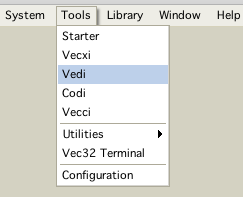
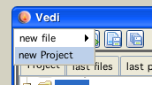
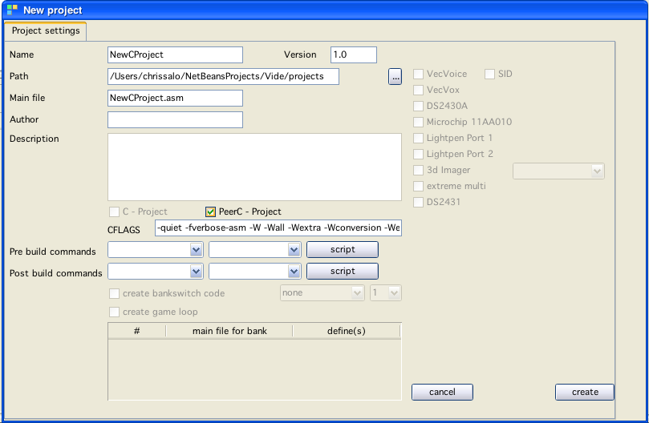
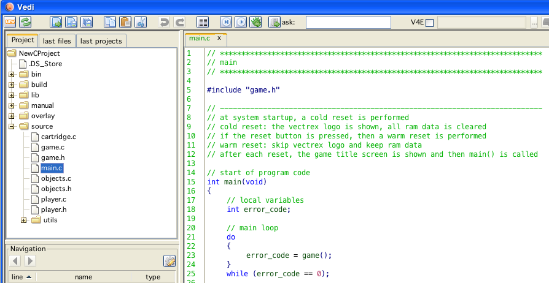

To program vectrex using "C" you have to start a new project. To do this, following steps must be taken:

open vedi

start new project
(and also fill in some of the other stuff - never mind the "main asm file")

PeerC
From the templates a "C"-Frame will be copied to the project directory, which is already a runnable "C" program.
Vedi now looks somewhat like:

C-Main